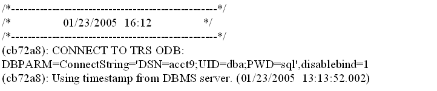

A separate database trace utility lets you add date and time entries to a log file for each SQL statement issued to the database, along with the syntax of the SQL statement. By default, this utility saves all log entries to a file named PBTRSSQL.log in the current Windows directory. You can change the log file location and log file name in the registry or in the Database section of the PB.INI file in the same way you change the trace output file name for the main database trace utility:
[database]
DBTraceFile=c:\myApplication\tracesql.log
The registry stirng for the log file name is SqlTraceFile. It is located under the HKEY_CURRENT_USER\Software\Sybase\PowerBuilder\10.5\DBTrace key. If the registry value is set, the setting in PB.INI is ignored. The default file name is used only if both the registry value and the PB.INI value are not set.
You start the SQL statement trace utility in PowerScript code by invoking the driver for the DBMS that you want to use with a TRS modifier. You set the driver in the DBMS property of a connection object. For example, for the default SQLCA connection object, if you wanted to use ODBC with SQL tracing, you would code the following:
SQLCA.DBMS="TRS ODBC"
You can start and stop the SQL statement trace utility in PowerScript in the same way you start and stop the main database utility: you can start trace logging by setting the DBParm parameter to "PBTrace=1" and you can stop trace logging by setting the parameter to "PBTrace=0".
For more information, see "Starting a trace in PowerScript with the PBTrace parameter".
Server-side timestamps can be used instead of client-side timestamps if the connecting PowerBuilder database driver supports the DBI_GET_SERVER_TIME command type. Currently, server-side timestamps are available for the ASE, SYC, SYJ, and ODBC (PBASE, PBSYC, PBSYJ, and PBODB) drivers.
PBTRS105.DLL obtains the date and time from the server only once during the database connection processing. Each time a new timestamp needs to be generated, it determines the number of milliseconds that have transpired since the connection was established and computes the new server-side date and time by adding the elapsed interval to the initial connection timestamp obtained from the server.
Output to the log file is always appended. For ease of reading, the PBTRS105.DLL produces a banner inside the log file each time a new database connection is established. The banner lists the date and time of the database connection using the system clock on the client workstation. The DBParms for the database connection are listed immediately under the banner. If a server timestamp is used for subsequent entries in the log file, the statement "Using timestamp from DBMS server" is entered immediately under the DBParm listings.
When you are running an application with a database trace utility, one of the DBParm values should include the DisableBind parameter. You should set DisableBind to 1. Otherwise the syntax that is logged in the trace output file will contain parameter markers instead of human-readable values.
The following figure shows a banner from a trace file that uses a client-side timestamp in the banner itself, and server-side timestamps elsewhere:
